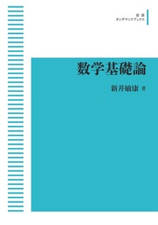
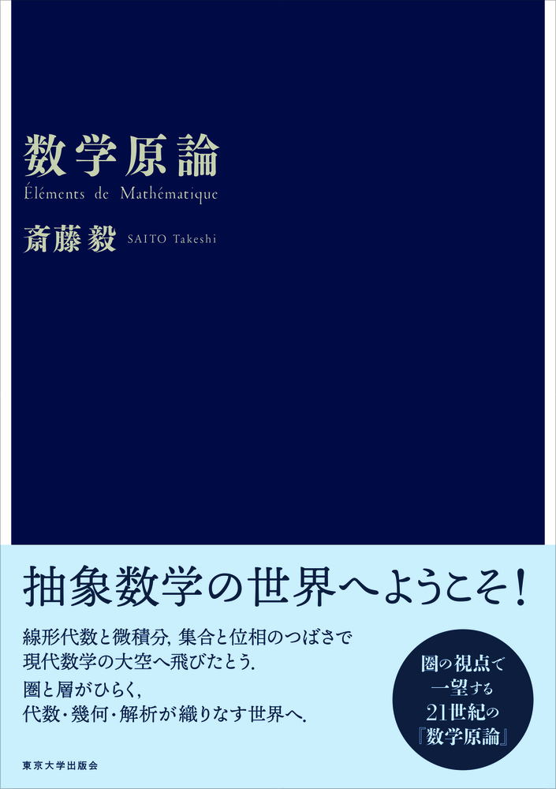
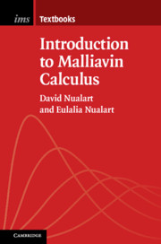

I am currently a Ph.D. candidate specializing in Bayesian Computation. I pursued my studies in Mathematics at the University of Tokyo, where I laid a solid foundation to study Statistical Inference for Stochastic Processes, a field renowned for its rigorous and mathematically demanding nature.
At the beginning of my freshman year, I had not intended to major in Mathematics.1 However, the exceptional faculty of the Mathematics Department at the university and the books listed below, awakened a latent passion for the subject within me. In the following sections, I will explore how these books inspired me and shaped my approach to Mathematics.
A Blog Entry on Bayesian Computation by an Applied Mathematician
$$
$$
1 Freshman Year: Mathematical Logic
The first mathematics course required for all natural sciences students is ‘Basics of Mathematical Sciences’ （数理科学基礎）. This course provides the first rigorous retreament of basic calculus, such as the definition of sequence limits, function continuity, and the \(\varepsilon\)-\(\delta\) technique, as well as basic matrix operations, such as Euler elimination method. The accompanying exercise class offered me a revoluationary experience focused on the \(\varepsilon\)-\(\delta\) technique. Professor Yusuke Nakamura designed a series of problems to prove sequence convergence. Students were required to solve these problems until they could complete a proof that required no furthur revision. This experience deeply ingrained in me what is true rigor and fully convinced me why we need it.
He also discussed the axioms of set. According to these axioms, sets can be defined in only the following two ways:2
- As a subset of a set \(X\): \[ \left\{x\in X\mid \textit{some conditions on }x\right\}. \]
- As the image of a function \(f:X\to Y\): \[ \left\{f(x)\in Y\mid \textit{some conditions on }x\right\}. \]
Every component of the above expressions matters. I learned that every mathematical notation have a meaningful purpose behind it. In other words, we must create notations that are consistent with the definition of the concepts they represent.
Students with a strong interest in Mathematics are recommended to take the course ‘Foundations of Analysis’（解析学基礎）. This course taught me about the construction of Real Numbers and the concept of Continuity in Real Numbers, which is arguably one of the most rigorous and thorough topics that a beginner can encounter. After completing this valuable course, I discovered ‘Mathematical Logic’ by Toshiyasu Arai (新井敏康, 2011). This book significantly influenced my attituded toward Mathematics. Coincidentally, Professor Arai joined the University of Tokyo the following year.

I was fortunate to realize at an early stage that most mathematical statements can be completely expressed in first-order logic. The reason they are often stated in natural language is simply for easier understanding.
2 Sophomore Summer: Category Theory
By the time students reached their sophomore year, most of the required courses were completed, which gave me more time to dedicate to Mathematics. Apart from advanced calculus courses, the most memorable one of which being ‘Vector Calculus’ taught by Prof. Taro Asuke, which introduced the differential form to explain the general Stokes theorem, another significant influence on my studies was ‘Category and Sheaf’ by Prof. Takeshi Saito（斎藤毅）.
This course evolved into a book titled ‘Éléments de Mathématique’（数学原論） (斎藤毅, 2020). As you can see, the professor is well-known for his admiration of Nicolas Bourbaki. He is said to have taught himself using Bourbaki’s book of the same title when he was just a high school student.

In the first half of the course, Category Theory was introduced, and in the latter half, manifolds were constructed using concepts from Category and Sheaf theory developed in the first half.3 The most intriguing aspect for me was the professor’s use of examples accessible to sophomores, such as the category of finite dimensional \(K\)-liner spaces and liner mappings \(\mathrm{FinVect}_K\), and the category of open sets in \(\mathbb{R}^2\) with \(C^1\)-mappings. I felt that all the mathematics I had learned in the previous year was unified under a single framework.
Let me introduce the categorical definition of a category, which struck me at that time and continues to impress me even now. This approach allows us to generalize the definition of a category within a different category than \(\mathrm{Set}\).
This represents an entirely different approach to defining a mathematical object compared to what I had learned previously. Among these, there are two dual perspectives in mathematics: sets and functions (or, morphisms), and We can construct a consistent mathematical theory using either perspective. The reason we typically use set theory as a foundational approach is simply due to familiarity.4
Again, I was fortunate to realize early on that all mathematical phenomena are deeply interconnected and do not occur in isolation. Moreover, human beings have the capability to invent mathematical tools to capture the entire picture of these phenomena.
3 Sophomore Autumn: Set Theory
As mentioned earlier, students at this university transition to their respective departments based on their major in the middle of their second year. Therefore, Starting in the autumn of my sophomore year, I began taking required courses in the Mathematics Department. In the ‘Category and Sheaf’ course, I had encountered concepts from Topology in an extraordinary manner, thus my next task was to familiarize myself to these concepts through the regular curriculum.
There are enormous options for undergraduate textbooks on General Topology, but I chose the most rigorous and Bourbaki-style one, ‘Set and Topology’ written again by Prof. Takeshi Saito (斎藤毅, 2009).

I was also incredibly fortunate to have systematically learned the fundamental languages of Mathematics, Sets and Topology, in the style of Professor Saito, who has cultivated these disciplines to an extraordinary level, having learned them from Bourbaki himself.
To give some examples, it rigorously distinguishes between two objects which are both referred to as ‘family’. One way to represent a family of sets is as follows: \((X_\lambda)_{\lambda\in\Lambda}\), which is a mapping \(\Lambda\to\mathrm{Set};\lambda\mapsto X_\lambda\). Another way to represent a family of sets is \(\{X_\lambda\}_{\lambda\in\Lambda}\). This uses curly braces ‘{}’, the same notation used for defining sets as mentioned earlier, to indicate it is a set. Specifically, a set constructed as the image of the function \((X_\lambda)_{\lambda\in\Lambda}\).
The use of parentheses ‘()’ is consistent with the notation for tuples, such as \((x,y)\). In fact, tuples can natural be understood as a function \(2\to \{x,y\};0\mapsto x,1\mapsto y\). From the perspective of Set Theory, a tuple is usually defined in the (Kuratowski, 1921) style: \[ (x,y):=\{\{x\},\{x,y\}\}. \]
Once again, every aspect of mathematical notation matters.
Moreover, the book covers the concept of the universality of the direct product of sets. The explanation is so seamless that it presuades the reader that it is the mathematical phenomenon that underlies all the fundamental theorems on homomorphisms across various other categories. Futhermore, this is not just mere coincidence or a simple mnemonic to be appreciated outside the context of mathematics. It can be understood through the concept of forgetful functors from various concrete categories \(C\) to that of sets, \(F:C\to\mathrm{Set}\).
4 Third Year: Functional Analysis
5 Fourth Year: Stochastic Calculus

References
Footnotes
At the University of Tokyo, students don’t choose their major until the middle of their sophomore year. In June of the second year, they submit their preferences and the department they will advance to is determined based on their GPA ranking.↩︎
Some readers might question how a truly new set can be defined, given that the two allowed methods appear quite restrictive. However, this issue is addressed by the axiom that guarantees the existence of the power set \(P(X)\) from any existing set \(X\). Additionally, it might be helpful to note that the only initial set is the empty set \(\emptyset\). From this, we can generate an infinite hierarchy of power sets starting with \(\emptyset\), accompanied by enormous auxiliary sets constructed in the two aforementioned manners.↩︎
As some readers might guess this, the majority of attendees were actually 3rd and 4th-year math students. We sophomores lacked even basic tools from Topology. Surprisingly, my first introduction to topological concepts was through Sheaf Theory.↩︎
Take, for instance, the theory of Markov Categories, which offers a dual perspective on Probability Theory.↩︎